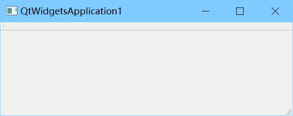
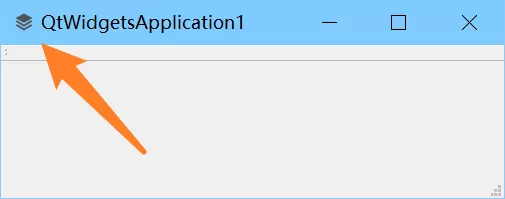
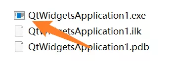
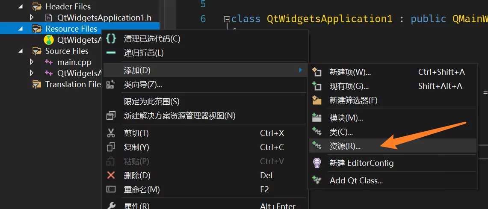
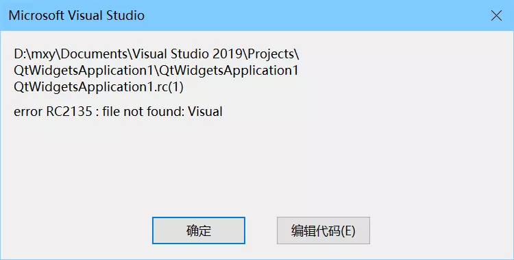
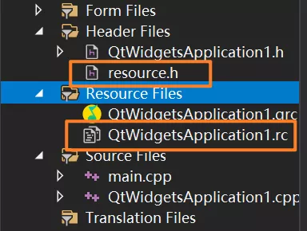
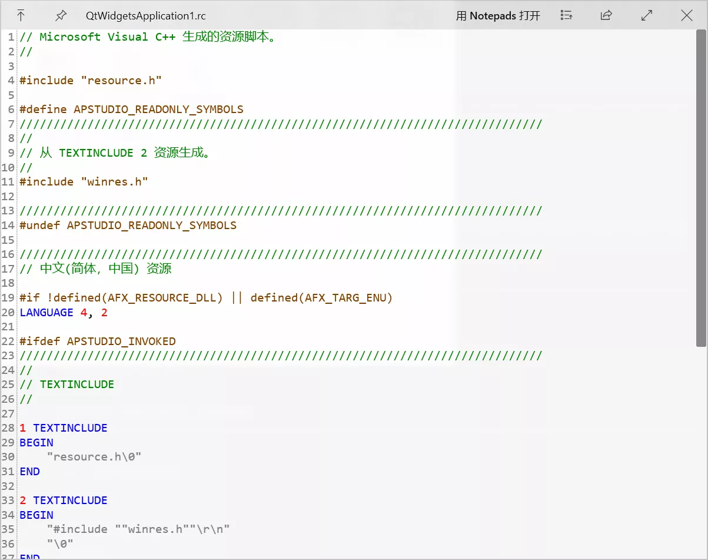
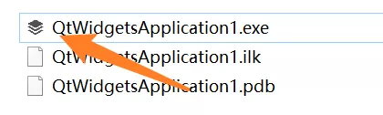

Visual Studio & Qt 设置可执行程序图标
本文最后更新于：2022年3月23日 晚上
直入主题
下面是通过 Visual Studio 创建的 QtWidgetsApplication 的默认界面，一行代码都没有写，可以看到窗口左上角的图标是默认没设置的。

随意找了个图标用于测试，如图，文件名分别是 app.png 和 app.ico 。
在主窗口类的构造函数里添加代码：
setWindowIcon(QIcon("app.webp"));再编译运行，就可以看到窗口图标有了。

进入到编译后的文件目录看一下，可以看到可执行程序的图标仍旧是默认的图标。

接下来按照众多博客的方法添加资源文件，操作方式如图：

以我的实际经验来说，这一步直接弹出了报错对话框，如图：

看报错我猜应该是路径问题，路径中有空格，它应该是不支持带空格的路径，不过没关系，文件实际上是创建了的，自动创建了两个文件：

两个文件可以自行打开看一下，生成了一堆代码，也不清楚有啥用，实际上此时此刻编译一下还会报错。但总的来说这跟众多博文描述的并不一样，我也不知道为什么会是这样，至少这一开始让我很困惑。我的理解是 VS 以为我们想要的资源文件和我们实际想要的并不是同一个东西。

直接删除生成的头文件 resource.h 并清除 xxx.rc 文件的内容，重新写入如下代码，保存并重新编译。
IDI_ICON1 ICON "app.ico"详细可参考 Qt 官方文档：https://doc.qt.io/qt-5/appicon.html

重新编译后就可以看到图标已经有了：

另外
也可以通过手动新建文本文件的方式添加的，只不过就需要手动修改项目的配置文件。
以手动新建一个 res.rc 资源文件为例，新建文件并写入：
IDI_ICON1 ICON "app.ico"在 xxx.vcxproj 文件中添加以下内容，注意路径：
<ItemGroup>
<ResourceCompile Include="res.rc" />
</ItemGroup>在 xxx.vcxproj.filters 文件中添加以下内容，注意路径保持一致：
<ItemGroup>
<ResourceCompile Include="res.rc">
<Filter>Resource Files</Filter>
</ResourceCompile>
</ItemGroup>再重新编译一次就可以了，跟 VS 添加资源是一样的，只不过 VS 会自动完成上述两个配置。
本站所有文章除特别声明外，均采用 CC BY-SA 4.0 协议 ，转载请注明出处！